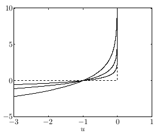

Bir dışbükey probleme bakalım şimdi, artık tanıdık olan genel form bu,
\[ \min_x f(x) \quad \textrm{öyle ki} \] \[ h_i(x) \le 0, \quad i=1,..,m \] \[ Ax = b \]
Tüm bu fonksiyonların dışbükey ve iki kere türevi alınabilir olduğunu farz ediyoruz. Şimdi log bariyer metotu uygulayacağız, bu ilk göreceğimiz iç-nokta yöntemi olacak [1, 14:00].
Bu yöntem ile önce eşitsizlik kısıtlamalarına tekabül eden bir log bariyer fonksiyonu tanımlamak gerekiyor. Bu fonksiyon,
\[ \phi(x) = -\sum_{i=1}^{m} \log(-h_i(x)) \]
Tabii \(\log\)’un negatif değerler üzerinde işletilemeyeceğini biliyoruz, o sebeple üstteki eksi ile çarpım var (kısıtlamalara göre \(h_i\)’ler eksi olmalı, onu da biliyoruz). Bu fonksiyon ile yapmaya uğraştığımız gösterge (indicator) fonksiyonunu yaklaşıklamak. \(\phi\)’nin tanım kümesi \(h\)’ye göre harfiyen olurlu olan \(x\)’ler.
Şimdi log bariyerin yaklaşıklamayı nasıl yaptığına gelelim. Eşitlik kısıtlamalarını atlarsak, üstteki minimizasyon problemi şu şekilde de gösterilebilir [1, 15:53],
\[ \min_x f(x) + \sum_{i=1}^{m} I_{h_i(x) \le 0}(x) \]
\(I\) her \(h_i\)’nin sıfırdan küçük olup olmadığına göre 0 ya da çok büyük değerler verir, bu yüzden üstteki gibi bir temsil, eşitsizlik kısıtlamalarını kullanmakla eşdeğerdir. Çünkü minimizasyon problemi doğal olarak çok büyük değerlerden kaçacak, ve böylece kısıtlamalar dolaylı yoldan problem çözümüne dahil olmuş olacak. Altta kesikli çizgiyle göstergeç fonksiyonu görülüyor,

Diğer kavisli çizgiler ise \(-\log(-u) \frac{1}{t}\), her \(t\) için farklı bir eğri. \(t\) büyütüldükçe log bariyer fonksiyonunu göstergeci daha da iyi yaklaşık temsil etmeye başlıyor / ona yaklaşıyor [1, 17:08].
Altta farklı \(\mu\) değerleri için \(-\mu \log(-u)\) fonksiyonun değerlerini görüyoruz. Fonksiyon görüldüğü gibi \(I\)’ya oldukca yakın.
def I(u):
if u<0: return 0.
else: return 10.0
u = np.linspace(-3,1,100)
Is = np.array([I(x) for x in u])
import pandas as pd
df = pd.DataFrame(index=u)
df['I'] = Is
df['$\mu$=0.5'] = -0.5*np.log(-u)
df['$\mu$=1.0'] = -1.0*np.log(-u)
df['$\mu$=2.0'] = -2.0*np.log(-u)
df.plot()
plt.savefig('func_59_barr_02.png')Herhalde simdi en yapacagimiz tahmin edilebilir, gostergec fonksiyonlariyla ile calismak zor, o zaman göstergeç toplamları log toplamları olarak yaklaşıksallanabilir,
\[ \min_x f(x) + \frac{1}{t} \sum_{i=1}^{m} \log(-h_i(x)) \]
ki \(t\) büyük olacak şekilde çünkü o zaman log, göstergeci iyi yaklaşık olarak temsil ediyor, ardından bu yeni pürüzsüz problemi çözüyoruz, eşitsizlik şartlarına ihtiyaç duymadan.
Log-Bariyer Calculus
\(\phi\) fonksiyonunun bazı özelliklerini dökmek faydalı olur, ileride Newton metotundan bahsettiğimizde bu özellikler faydalı olacak. \(\phi\) için gradyan ve Hessian,
\[ \nabla \phi(x) = - \sum_{i=1}^{m} \frac{1}{h_i(x)} \nabla h_i(x) \]
Hessian
\[ \nabla^2 \phi(x) = \sum_{i=1}^{m} \nabla h_i(x) \nabla h_i(x)^T - \sum_{i=1}^{m} \frac{1}{h_i(x)} \nabla^2 h_i(x) \]
Merkezi gidiş yolu (central path)
Optimizasyon problemimizi \(1/t\) yerine \(t\) carpimi ile de gosterebiliriz, yani
\[ \min_x t f(x) + \phi(x) \quad \textrm{öyle ki} \] \[ Ax = b \]
Herneyse, merkezi yol \(x^\ast(t)\), \(t>0\)’nin bir fonksiyonudur, yani her \(t\) için eldeki çözümlerin ortaya çıkarttığı yoldur bir bakıma. Her \(t\) için problemin çözümünü KKT koşulları ile karakterize edebiliriz.
\[ Ax^\ast(t) = b, \quad h_i(x^\ast(t)) < 0, \quad i=1,..,m \]
\[ t \nabla f(x^\ast(t)) - \sum \frac{1}{h_i(x^\ast(t))} \nabla h_i(x^\ast(t)) + A^T w= 0 \]
Bu koşullar \(x^\ast(t)\)’nin optimal olmasının ne demek olduğunu tanımlıyor. İki denklemdeki ilk denklem ana olurluktan geliyor, eşitlik sınırlamalarına tekabül eden tek ikiz değişken var, \(w\), onun işareti üzerinde kısıtlama yok çünkü eşitlik kısıtlaması. Durağanlık koşulu ikinci denklemde, ona nasıl eriştik? Problemin Lagrangian’i
\[ t f(x) + \phi(x) + w^T (Ax - b) \]
Eğer \(x\)’e göre gradyan alıp sıfıra eşitlersek durağanlığı elde ederim. Gradyan yeterli çünkü buradaki tüm fonksiyonlar dışbükey ve pürüzsüz [1, 24:04].
Eğer üstteki problemi bir \(w\) için çözersem o zaman merkezi yoldaki bir çözümü belli bir \(t\) için karakterize etmiş / tarif etmiş oluyorum. Umudumuz o ki \(t\)’yi sonsuzluğa doğru büyüttükçe üstteki KKT koşullarıyla temsil edilen çözümler orijinal problemimdeki çözüme yaklaşmaya başlayacak. Bu olabilir değil mi? \(t\)’yi büyüttükçe log bariyerin nasıl göstergeç fonksiyonuna benzemeye başladığını biraz önce gördük. Bu tür log bariyerlerden oluşan optimizasyon problemi için de benzer bir durum olacağını tahmin edebiliriz.
Bu kavramları lineer programlar için yakından görebiliriz. Tüm bu yaklaşımlar bu arada ilk başta LP’ler için ortaya atılmıştır.
Önemli bir örnek,
\[ \min_x t c^T x - \sum_{i=1}^{m} \log(e_i - d_i^T x) \]
Bu bir standart LP’nin bariyerleştirilmiş hali. Eşitlik kısıtlaması yok, ve bariyer fonksiyonu çokyüzlü kısıtlama \(D x \le e\) ifadesine tekabül ediyor. Bu problemi belli bir \(t\) için çözersem, \(t\)’yi büyütürsem, bunu ardı ardına tekrar edersem umudum orijinal LP’nin çözümüne yaklaşmak.
Resimde görüldüğü gibi, ortadan başlıyoruz, \(t=0\)’da diyelim, ve \(t\)’yi büyüttükçe yolda ilerliyoruz, ve sonuca erişiyoruz. Gidiş pürüzsüz, ve LP’lerin karakterinden biliyoruz ki nihai sonuç çokyüzlümün (polyhedra) ekstrem noktalarının birinde olmalı. Yarı yolda \(t=10\)’daki bir nokta gösteriliyor, nihai sonuç belki \(t=100\)’da [2, 26:59]
KKT koşulu üzerinden durağanlığı temiz bir şekilde gösterebiliyoruz, ya da iç nokta ve ortada, merkezde bir yol takip edilmesini zorlama bağlamında, merkezlik şartı da deniyor buna, gradyan alınınca
\[ 0 = tc - \sum_{i=1}^{m} \frac{1}{e_i - d_t ^T x^(t)} d_i \]
Bu demektir ki gradyan \(\nabla (x^\ast(t))\), \(-c\)’ye paralel olmalıdır, ya da \(\{ x: c^T x = c^T x^\ast(t) \}\) hiper düzlemi \(\phi\)’nin \(x^\ast(t)\)’deki konturuna teğet durmalıdır [1, 28:12].
Ikiz noktalar
Birazdan merkezi yoldan ikiz noktalar alabileceğimizi göreceğiz. Bu çok faydalı olacak çünkü bu ikiz noktaları bir ikiz boşluğu hesaplamak için kullanacağız. Merkezi yoldayken bu yoldaki noktalar \(x*(t)\)’leri kullanarak olurlu ikiz noktalar hesaplayabiliriz. Orijinal probleme tekrar bakarsak, bu problem için ikiz değişkenleri elde etmek için her eşitsizlik için bir \(u_i\)’ye, her eşitlik şartı için bir \(v_i\)’ya ihtiyacım var. Onları nasıl tanımlarım? Merkezi yol üzerindeki çözümler üzerinden,
\[ u_i^\ast(t) = \frac{1}{t h_i(x^\ast(t))}, \quad i=1,..,m, \quad v^\ast(t) = w/t \]
\(w\) bariyer problemi için KKT koşullarını çözerken elde ettiğim değişken idi.
Niye üsttekiler orijinal problem için olurlu? Bunu görmek kolay, ilk önce, \(u_i^\ast(t)\)’nin her ögesi harfiyen pozitif, çünkü \(h_i(x^\ast(t))\)’nin her ögesi harfiyen negatif. Bu bariyer probleminin ana olurluk şartından geliyor. Ayrıca \((u^\ast(t),v^\ast(t))\) Lagrange ikiz fonksiyonu \(g(u,v)\)’nin tanım kümesinde (domain). Hatırlarsak Lagrange ikizi formülize ettiğimizde tanım kümesinde bazı dolaylı sınırlamalar elde ediyorduk. Tarif itibariyle
\[ \nabla f(x^\ast(t)) + \sum_{i=1}^{m} u_i (x^\ast(t)) \nabla h_i(x^\ast(t)) + A^T v^\ast(t) = 0 \]
Yani \(x^\ast(t)\), Lagrangian \(L(x,u^\ast(t),v^\ast(t))\)’i tüm \(x\)’ler üzerinden minimize edeceği için \(g(u^\ast(t),v^\ast(t)) > -\infty\). Bu direk durağanlık şartından geliyor işte. O kadar bariz birşey ki aslında bazen kafa karıştırıyor. Merkezi yol probleminden çözdüğümüz durağanlık koşulu şöyleydi,
\[ t \nabla f(x^\ast(t)) - \sum \frac{1}{h_i(x^\ast(t))} \nabla h_i(x^\ast(t)) + A^T w= 0 \]
Bir \(x^\ast\) çözümü ve \(w\) olduğunu farz ediyoruz. Tüm formülü \(t\) ile bölersem,
\[ \nabla f(x^\ast(t)) - \sum \frac{1}{t h_i(x^\ast(t))} \nabla h_i(x^\ast(t)) + A^T \frac{w}{t}= 0 \]
Tek yaptığımız “üstteki orijinal problemdeki durağanlık şartına çok benziyor’’ demek, değil mi, çünkü
\[ \nabla f(x^\ast(t)) + \sum \underbrace{\frac{-1}{t h_i(x^\ast(t))}}_{u_i} \nabla h_i(x^\ast(t)) + A^T \underbrace{\frac{w}{t}}_{v}= 0 \qquad (4) \]
desem, orijinal problemin durağanlık şartına benzeyen bir ifade elde etmiş olurum [2, 33:48]. Demiştik ki üstteki \(u_i,v\) tanımları üzerinden orijinal problem için olurlu ikiz noktaları alabiliyoruz.
Soru: niye orijinal problem için optimal noktaları elde etmedim? Biraz önce gördük, durağanlık koşulunu tatmin ettim, ana, ikiz olurluk var.. ama.. tamamlayıcı gevşeklik tatmin edilmedi. Çok önemli. Onun yerine ne var? \(u_i h_i (x) = 0\) olması lazım, onun yerine ne var? Tanım itibariyle \(u_i = -1/t ..\) var. O zaman sıfıra yakınsak çok yakınsak bölüm büyür, dolaylı olarak \(t\)’yi büyüttükçe orijial problemin KKT koşullarını yaklaşıksallamış oluruz. O zaman log bariyer problemini çözmüş olmamıza rağmen belli bir \(t\) değer için orijinal problem için çözüm olmamasının sebebi tamamlayıcı gevşekliğin tatmin edilmiyor olması.
Ama elimizdekiler hala çok faydalı, çünkü herhangi bir anda merkez yol üzerinde \(t\)’nin fonksiyonu olarak ne kadar alt optimal olduğumuzu sınırlamak mümkün oluyor. Bunun için sadece ikiz boşluğunu hesaplıyoruz, o kadar. O zaman \(u^\ast,v^\ast\)’da Lagrange ikiz fonksiyonu hesaplıyorum, ve \(f^\ast\) ile bu Lagrange farkını buluyorum, ve ikiz boşluğu hesaplanmış oluyor. (4)’te gördük ki \(x^\ast\) Lagrangian’i \(u^\ast,v^\ast\)’da minimize eder, o zaman ikizi alttaki gibi hesaplayarak
\[ g(u^\ast(t),v^\ast(t)) = f(x^\ast(t)) + \sum_{i=1}^{m} u_i^\ast(t) h_i(x^\ast(t)) + v^\ast(t)^T (Ax^\ast(t) - b) \]
Büyük toplamdaki ikinci terim sıfır, çünkü merkezi yolda \(Ax^\ast\) her zaman \(b\)’ye eşittir. Birince terimde, \(u_i\)’i \(-1/t\)’ye eşitledik, ve bu \(m\) kere toplanacak, sonuç
\[ = f(x^\ast(t)) - m/t \]
Yani göstermiş olduk ki merkezi yolun optimallikten olan uzaklığı en fazla \(m/t\) olacaktır,
\[ f(x^\ast(t)) - f^\ast \le m/t \]
Üstteki bariyer metorun işlediğine dair ispata en yakın sonuç, bize diyor ki eğer herhangi bir \(t\) için bariyer problemini çözersem optimalliğe yakınlık her zaman \(m/t\)’den küçük olur. \(t\)’yi isteğe bağlı olarak büyüttükçe o ölçüde optimalliğe yaklaşmış olurum.
Merkezi yolu yorumlamanın bir diğer yolu “sarsıma uğratılmış KKT koşulları’’ denen bir teknik üzerinden. Şimdiye kadar gördük ki merkez yol ve ona tekabül eden ikiz değerler (4)’teki durağanlık şartını çözüyor. \(u_i \ge 0\), \(h_i(x) \le 0\), ve \(Ax = b\). Tamamlayıcı gevşeklik haricinde tüm koşullar tatmin. Esas KKT koşullarında
\[ u_i^\ast(t) \cdot h_i^\ast(t) = 0, \quad i=1,..,m \]
olurdu, biz onun yerine
\[ u_i^\ast(t) \cdot h_i^\ast(t) = -1/t, \quad i=1,..,m \]
dedik. Yani bir anlamda log bariyer fonksiyonunu unutuyoruz, onun yerine şu probleme bakıyoruz,
\[ \nabla f(x^\ast(t)) + \sum_{i=1}^{m} u_i(x^\ast(t))\nabla h_i(x^\ast(t)) + A^T v^\ast(t) = 0 \]
\[ u_i^\ast(t) \cdot h_i^\ast(t) = -1/t, \quad i=1,..,m \]
\[ h_i(x^\ast(t)) \le 0, \quad i=1,..,m, \quad Ax^\ast(t) = b \]
\[ u_i(x^\ast(t)) \ge 0 \]
Ve \(t\)’yi büyüterek üstteki problemi çözüyorum. Yani olurluğu, durağanlığı tam olarak, tamamlayıcı gevşekliği ise yaklaşık olarak çözmüş oluyorum, ve yaklaşıksallığı gittikçe büyüyen \(t\)’ler üzerinden daha sıkı hale getiriyorum. Yani log bariyer tekniği ile sarsıma uğratılmış KKT koşulları sınırlı problemleri çözmenin iki yolu.
Niye ufak \(t\) ile başlayıp büyütüyorum [2, 02:19]? Çünkü pratikte bu iyi işliyor. Niye işlediğini görmek zor değil, \(t\) küçükken tüm fonksiyon oldukca pürüzsüz, ve onun üzerinde Newton adımları rahat işler. Ama \(t\)’yi büyüttükçe onun kontrol ettiği fonksiyon kısımlarını gittikçe daha az pürüzsüz yapmaya başlıyorum, ama bu çok kötü değil çünkü bu noktada çözüm bölgesine kabaca yaklaşmış olmalıyım.
Yakınsama analizi (convergence analysis)
Teori
Diyelim ki merkezleştirme adımlarını kesin olarak çözebiliyoruz, yani, diyelim ki ne zaman Newton metotunu uygularsam mükemmel bir sonuç alıyorum. Tabii ki bu gerçekte olmuyor ama farz edelim. O zaman, sadece \(t\)’yi her adımda \(\mu\) ile çarpmamızın doğal sonucu olarak ve ikizlik boşluğununun \(m / t\) olması sebebiyle \(k\) adım sonrası alttakini görürdük,
\[ f(x^(k)) - f^\ast \le \frac{m}{\mu^k t^{0}} \]
Bu ifade diyor ki istenen \(\epsilon\) seviyesinde bir doğruluğa erişmek için
\[ \frac{\log ( m / (t^{(0)} \epsilon) )}{\log \mu} \]
tane merkezleştirme adımına ihtiyacımız var.
Olurluk metotu (feasibility method)
Bariyer metotunun bir noktadan başlaması gerekir ve bu nokta olurlu olmalıdır. Olurlu derken
\[ h_i(x) < 0, \quad i=1,..,m, \quad Ax = b \]
şartlarına uyan bir noktadan bahsediyorum. Fakat ya öyle bir nokta elimizde yoksa? Başta olurlu olan bir noktayı bulmanın kendisi de zor bir problem. Böyle bir noktayı elde etmek için olurluk metotu denen bir yöntem kullanmak gerekecek. Boyd’un kitabı [4, Bölüm 11] bu metota “1. Faz (Phase I)’’ ismi veriyor, problemin kendisini çözmeye”2. Faz’’ diyor. Pratikte bariyer metotunu kullanmak isteyenler bunu hatırlamalı.
Harfiyen olurlu bir noktayı nasıl buluruz? Kulağa biraz dolambaçlı gibi gelebilir ama bu noktayı bulmak için ayrı, farklı bir optimizasyon problemi daha kurarız, onu da bariyer metotu ile çözeriz. Tabii illa bariyer metotu olması gerekmez, ana-çift iç-nokta yöntemi de olabilir, ama her halükarda alttaki problemi çözeriz.
Bu problemde elimizde iki tane değişken grubu var, \(x,s\). Problem [2, 23:02],
\[ \min_{x,s} s \quad \textrm{öyle ki} \] \[ h_i(x) \le s, \quad i=1,..,m \] \[ Ax = b \]
Amaç harfiyen negatif bir \(s\) elde etmek, böylece \(h_i(x) \le s\) üzerinden ana problemin eşitsizlik şartları tatmin olacak, ayrıca \(Ax = b\)’e uygun bir başlangıç noktası elde edilmiş olacak ki bu da ana problem için gerekli.
Bu problemi bariyer metotu ile çözmek oldukca kolay, ana problemin kendisi kadar zor değil. Niye? İki sebep: ilki, üstteki problemi çözmek için de harfiyen olurlu bir başlangı noktası lazım, ama bu noktayı bulmak aslında çok kolay. Bana tek gereken eşitlik kısıtlaması \(Ax = b\)’yi tatmin eden bir \(x\) bulmak, ama bu lineer bir sistem çözümü, her lineer cebir paketi bunu çözer. Ardından elde edilen \(x\) ile \(h_i(x)\)’i hesaplamak, ve bunların en büyüğünü artı mesela 0.01 diyerek kullanmak [2, 24:00]. Elde edeceğimiz sonuç üstteki problem için harfiyen olurludur, eşitsizlik kısıtlamalarına harfiyen uygun. Şimdi elimde bir başlangıç \(x\)’i ve \(s\)’i var, ve buradan başlayarak bariyer metotunun adımlarını uygulayabilirim. İşin güzel tarafı durma şartımız çok basit, \(s\)’in her ögesinin negatif olduğunu gördüğüm anda şak diye durabilirim, yani üstteki programın “optimal’’ olmasıyla ilgilenmiyorum sonuçta bana tek gereken ana problemim için olurlu bir başlangıç noktası. Çoğunlukla yapılan tarif edilen şekilde \(x,s\) bulmak ve bunu ardı ardına yapmak ta ki tamamen negatif elde edilene kadar ve o noktada durulur, ana probleme dönülür.
Alternatif olarak şu problem de çözülebilir,
\[ \min_{x,s} 1^T s, \quad \textrm{öyle ki} \] \[ h_i(x) \le s_i, \quad i=1,..,m \] \[ Ax = b, s \ge 0 \]
Bu metotun avantajı eğer sistem olurlu değilse hangi kısıtlamanın harfiyen yerine getirilemediğini bize söyler. Dezavantaj çözmesinin biraz daha zor olabilmesi.
Ekler
Bir diğer başlangıç noktası bulma metotu, Faz I yaklaşımı daha [5]. Burada
\[ \min t, \quad \textrm{öyle ki} \] \[ Ax = b, \quad x \ge (1-t) 1, \quad t \ge 0 \]
problemini çözüyoruz, ki değişkenler \(x\) ve \(t \in \mathbb{R}\). Eğer üstteki problemde \(t < 1\) olacak şekilde olurlu bir \(x,t\) bulabilirsek, o zaman elimizdeki \(x\) orijinal problem için de harfiyen olurlu olacaktır. Argümanın tersi de geçerli, esas LP harfiyen olurludur sadece ve sadece \(t^\ast < 1\) ise ki \(t^\ast\) Faz I probleminin optimal değeri.
Ama şimdi üstteki problem için nasıl başlangıç değeri buluruz sorusu var, ama bu daha basit. \(Ax^0 = b\)’ye çözüm olan herhangi bir \(x^0\)’yu alırız, ve \(t^0 = 2 - \min_i x_i^0\) seçeriz. Tabii eğer \(\min_i x_i^0 < 0\) değil ise, yani tüm \(x_i\)’lar pozitif ise, o zaman iş bitti demektir, \(x^0\) zaten harfiyen olurlu. Değil ise log bariyer ile devam edeceğiz, problemi standart forma çevirmek için \(z = x + (t-1)\vec{1}\) diyebiliriz,
\[ z = x + t \vec{1} - \vec{1} \]
Ya da
\[ x = z - t\vec{1} + \vec{1} \]
Bunu \(Ax = b\) üzerinde uygularsak,
\[ A (z - t\vec{1} + \vec{1}) = b \]
\[ Az - A t\vec{1} = b - A\vec{1} \]
Eşitliğin solundakiler yerine \(x\)’i genişletip \(t\) için yeni bir hücre yaratabiliriz, ve \(A\)’ya yeni kolon ekleriz, bu kolondaki her öge mevcut \(A\)’nin satırlarının toplamının negatifi olur. Bedel vektörü de \(c = [0, 0, ..., 1]\) haline gelir, son öğe \(t\) için.
Standard LP çözen bariyer metot temelli [3] kod alttadır.
import numpy as np
def lp_acent(A,b,c,x_0):
b = b.flatten()
c = c.flatten()
ALPHA = 0.01
BETA = 0.5
EPSILON = 1e-6
MAXITERS = 100
if (np.min(x_0)<=0) and (np.linalg.norm>1e-3):
print ('failed' )
return 0
lambda_hist = []
x = x_0
for iter in range(MAXITERS):
g = c-np.power(x,-1)
w = np.linalg.solve(np.dot(np.dot(A,np.diag(np.power(x,2))),A.T),
np.dot(np.dot(-A,np.diag(np.power(x,2))),g))
dx = np.dot(-np.diag(np.power(x,2)),np.dot(A.T,w)+g)
lambdasqr = np.dot(-g.T,dx)
lambda_hist.append(lambdasqr/2)
if lambdasqr/2 <= EPSILON:
break
t = 1
while np.min(x+t*dx)<=0:
t =BETA*t
while np.dot(c.T,np.dot(t,dx))- \
np.sum(np.log(x+t*dx))+np.sum(np.log(x))-\
ALPHA*t*np.dot(g.T,dx)>0:
t = BETA*t
x = x+t*dx
if iter == MAXITERS:
print ('ERROR: MAXITERS reached')
else:
return x,w,lambda_hist
def lp_barrier(A,b,c,x_0):
T_0 =1
MU = 20
EPSILON = 1e-3
n = len(x_0)
t = T_0
x = x_0.flatten()
history = []
while True:
x_star, nu_star,lambda_hist = lp_acent(A,b,t*c,x)
x = x_star
gap = n/t
history.append(lambda_hist)
if gap<EPSILON:
break
t = MU*t
return x_star,nu_star,gap
def lp_solve(A,b,c):
m,n = A.shape
nsteps = np.zeros((2,1))
x0 = np.linalg.lstsq(A,b)[0]
t0 = 2+np.max([0,-np.min(x0)])
if np.min(x0)>0.0:
print ('Ax=b solution already feasible')
x_0 = x0
else:
print ("phase I")
A1 = np.hstack((A,np.dot(-A,np.ones((n,1)))))
b1 = b-np.dot(A,np.ones((n,1)))
z0 = x0+t0*np.ones((n,1))-np.ones((n,1))
c1 = np.vstack((np.zeros((n,1)),1))
z_star,nu_star,gap = lp_barrier(A1,b1,c1,np.vstack((z0,t0)))
if z_star[n] >= 1:
print ('Problem is infeasible')
exit()
x_0 = z_star[0:n]-(z_star[n]*np.ones((n,1))).flatten()+\
np.ones((n,1)).flatten()
x_star,nu_star,gap = lp_barrier(A,b,c,x_0)
return x_star,gap,nstepsÖrnek olarak uyduruk bir problem seçtik, problem özellikle başta olurlu nokta bulamayacak şekilde ayarlandı, böylece gidip kendimizin bulması gerekiyor.
import numpy as np
from scipy.optimize import linprog
import barr
import barr
A = [[1., 1., 1., 0.],
[1., 3., 0., 1.],
[9., 1., -3., 1.]]
b = [[5., 7., -1]]
c = [[-1., -5., 0., 0. ]]
A = np.array(A)
b = np.array(b).T
c = np.array(c).T
x_star,gap,nsteps = barr.lp_solve(A,b,c)
print ('log bariyer ==========')
print (x_star)
res = linprog(c, A_eq=A, b_eq=b)
print ('linprog ===============')
print (res)phase I
[[1.44060995]
[3.1918138 ]
[3.37720706]
[1. ]
[2.00321027]]
log bariyer ==========
[4.37502314e-01 2.18747454e+00 2.37502314e+00 7.40628401e-05]
linprog ===============
con: array([ 2.05213624e-11, 2.05719886e-11, -9.18283227e-11])
fun: -11.37499999994356
message: 'Optimization terminated successfully.'
nit: 4
slack: array([], dtype=float64)
status: 0
success: True
x: array([4.3750000e-01, 2.1875000e+00, 2.3750000e+00, 1.0991855e-11])Şimdi daha önce de çözdüğümüz bir örneğe tekrar bakalım,
\[ \min_x -x_1 - 5x_2 \quad \textrm{öyle ki} \] \[ x_1 + x_2 + x_3 = 5 \] \[ x_1 + 3 x_2 + x_4 = 7 \] \[ x_1,x_2,x_3,x_4 \ge 0 \]
A = np.array([[1, 1, 1, 0],
[1, 3, 0, 1]])
b = np.array([5,7])
c = np.array([-1, -5, 0, 0 ])
A = np.array(A)
b = np.array(b).T
c = np.array(c).T
x_star,gap,nsteps = barr.lp_solve(A,b,c)
print ('log bariyer ==========')
print (x_star)
res = linprog(c, A_eq=A, b_eq=b)
print ('linprog ===============')
print (res)Ax=b solution already feasible
log bariyer ==========
[1.87451194e-04 2.33324585e+00 2.66656670e+00 7.49883368e-05]
linprog ===============
con: array([1.18571819e-11, 1.18527410e-11])
fun: -11.66666666664022
message: 'Optimization terminated successfully.'
nit: 4
slack: array([], dtype=float64)
status: 0
success: True
x: array([1.15454732e-13, 2.33333333e+00, 2.66666667e+00, 3.96953400e-12])Bu durumda \(Ax^0=b\) çözümü başlangıç için yeterliydi ve o kullanıldı.
Gradyan ve Hessian
Pek çok yerde kullanılan bir eşitsizlik görelim, mesela bütün \(x_i < 0\) olduğu bir durum, yani \(h_i(x) = -x\). O zaman bariyer neye benzer?
\[ \phi(x) = - \sum_{i=1}^{n} \log x_i \]
\[ \nabla \phi(x) = - \left[\begin{array}{c} 1/x_1 \\ \vdots \\ 1/x_n \end{array}\right] = - X^{-1} \vec{1} \]
Burada \(X\) matrisi
\[ X = \mathrm{diag}(x) = \left[\begin{array}{ccc} x_1 & & \\ & \ddots & \\ & & x_n \end{array}\right] \]
ve \(\vec{1}\) sembolu tamamen 1’lerden oluşan matris.
Hessian
\[ \nabla^2 \phi (x) = \left[\begin{array}{ccc} 1/x_1^2 & & \\ & \ddots & \\ & & 1/x_n^2 \end{array}\right] = X^2 \]
Eski Anlatım
\[ \min_x f(x), \quad \textrm{öyle ki}, \] \[ c_i(x) \ge 0, \quad i=1,2,..,m \]
\(c_i\) ile gösterilen eşitsizlik içeren (üstte büyüklük türünden) kısıtlamalar olduğunu düşünelim. Bu problemi nasıl çözeriz?
Bir fikir, problemin eşitizliklerini bir gösterge (indicator) fonksiyonu üzerinden, Lagrange yönteminde olduğu gibi, ana hedef fonksiyonuna dahil etmek, ve elde edilen yeni hedefi kısıtlanmamış bir problem gibi çözmek. Yani üstteki yerine, alttaki problemi çözmek,
\[ \min_x f(x) + \sum_{i=1}^{m} I(c_i(x)) \]
ki \(I\) pozitif reel fonksiyonlar için göstergeç fonksiyonu,
\[ I(u) = \left\{ \begin{array}{ll} 0 & u \le 0 \\ \infty & u > 0 \end{array} \right. \]
Bu yaklaşımın nasıl işleyeceğini kabaca tahmin edebiliriz. \(I\) fonksiyonu 0’dan büyük değerler için müthiş büyük değerler veriyor, bu sebeple optimizasyon sırasında o değerlerden tabii ki kaçınılacak, ve arayış istediğimiz noktalara doğru kayacak. Tabii \(x_1 > 3\) gibi bir şart varsa onu \(x_1 - 3 > 0\) şartına değiştiriyoruz ki üstteki göstergeci kullanabilelim. Bu yaklaşıma “bariyer metotu” ismi veriliyor çünkü \(I\) ile bir bariyer yaratılmış oluyor.
Fakat bir problem var, göstergeç fonksiyonunun türevini almak, ve pürüzsüz rahat kullanılabilen bir yeni fonksiyon elde etmek kolay değil. Acaba \(I\) yerine onu yaklaşık temsil edebilen bir başka sürekli fonksiyon kullanamaz mıyız?
Log fonksiyonunu kullanabiliriz. O zaman eldeki tüm \(c_i(x) \ge 0\) kısıtlamalarını
\[ - \sum_{i=1}^{m} \log c_i(x) \]
ile hedef fonksiyonuna dahil edebiliriz, yeni birleşik fonksiyon,
\[ P(x;\mu) = f(x) - \mu \sum_{i=1}^{m} \log c_i(x) \]
olur. Böylece elde edilen yaklaşım log-bariyer yaklaşımı olacaktır. Mınımizasyon sırasında hem başta bariyerden kaçınilmiş olunacak, hem de \(\mu\) küçükdükçe hedefin geri kalanında istenilen minimal değerlere doğru kayılmış olunacak.
Algoritma olarak optimizasyon şu şekilde gider;
Bir \(x\) ve \(\mu\) değerinden başla.
Newton metotu ile birkaç adım at (durma kriteri yaklaşıma göre değisebilir)
\(\mu\)’yu küçült
Ana durma kriterine bak, tamamsa dur. Yoksa başa dön
Bu yaklaşımın dışbükey (convex) problemler için global minimuma gittiği ispatlanmıştır [4, sf. 504].
Örnek
\(\min (x_1 + 0.5)^2 + (x_2 - 0.5)^2\) problemini çöz, \(x_1 \in [0,1]\) ve \(x_2 \in [0,1]\) kriterine göre.
Üstteki fonksiyon için log-bariyer,
\[ P(x;\mu) = (x_1 + 0.5)^2 + (x_2-0.5)^2 - \mu \big[ \log x_1 + \log (1-x_1) + \log x_2 + \log (1-x_2) \big] \]
Bu formülasyonu nasıl elde ettiğimiz bariz herhalde, \(x_1 \ge 0\) ve \(x_1 \le 1\) kısıtlamaları var mesela, ikinci ifadeyi büyüktür işaretine çevirmek için eksi ile çarptık, \(-x_1 \ge 1\), ya da \(1-x_1 \ge 0\) böylece \(\log(1-x_1)\) oldu.
Artık Newton yöntemini kullanarak sanki elimizde bir kısıtlanması olmayan fonksiyon varmış gibi kodlama yapabiliriz, \(P\)’yi minimize edebiliriz. Newton yönü \(d\) için gereken Hessian ve Jacobian matrislerini otomatik türevle hesaplayacağız, belli bir noktadan başlayacağız, ve her adımda \(d = -H(x)^{-1} \nabla f(x)\) yönünde adım atacağız.
from autograd import numpy as anp, grad, hessian, jacobian
import numpy.linalg as lin
x = np.array([0.8,0.2])
mu = 2.0
for i in range(10):
def P(x):
x1,x2=x[0],x[1]
return (x1+0.5)**2 + (x2-0.5)**2 - mu * \
(anp.log(x1) + anp.log(1-x1) + anp.log(x2)+anp.log(1-x2))
h = hessian(P)
j = jacobian(P)
J = j(np.array(x))
H = h(np.array(x))
d = np.dot(-lin.inv(H), J)
x = x + d
print (i, x, np.round(mu,5))
mu = mu*0.10 [0.61678005 0.34693878] 2.0
1 [-0.00858974 0.486471 ] 0.2
2 [-0.02078755 0.49999853] 0.02
3 [-0.18014768 0.5 ] 0.002
4 [-0.49963245 0.5 ] 0.0002
5 [-0.50002667 0.5 ] 2e-05
6 [-0.50000267 0.5 ] 0.0
7 [-0.50000027 0.5 ] 0.0
8 [-0.50000003 0.5 ] 0.0
9 [-0.5 0.5] 0.0Görüldüğü gibi 5. adımda optimal noktaya gelindi, o noktada \(\mu\) oldukca küçük, ve bariyerle tanımladığımız yerlerden uzak duruldu, optimal nokta \(x_1=-0.5,x_2=0.5\) bulundu.
Kaynaklar
[1] Tibshirani, Convex Optimization, Lecture Video 15, Part 1, https://www.youtube.com/channel/UCIvaLZcfz3ikJ1cD-zMpIXg
[2] Tibshirani, Convex Optimization, Lecture Video 15, Part 2, https://www.youtube.com/channel/UCIvaLZcfz3ikJ1cD-zMpIXg
[3] Bao, LP-Solver, Github, https://github.com/rayjim/python_proj/blob/master/hm_8/lp_solver.py
[4] Boyd, Convex Optimization
[5] Boyd, Convex Optimization, Solutions to additional exercises